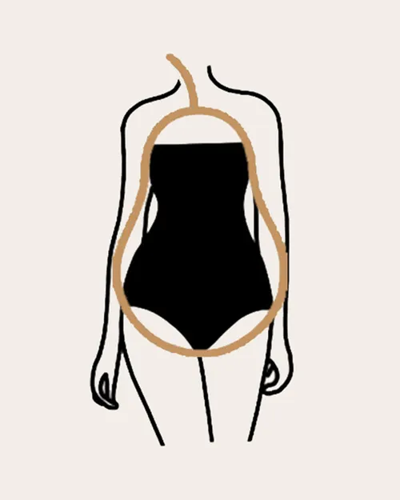

The pear body shape is characterised by large hips which are wider than the bust and shoulders. This makes the body appear like a pear shape.The Pear shape is characterized by shoulders and bust that are smaller than the hips and a defined, often high, waist. Usually this shape has proportionally slim shoulders and arms, and a long neck. Pears almost always wear at least one size bigger on the bottom than they do on top. The Pear shape is also called the “triangle” or “A -shape”.
